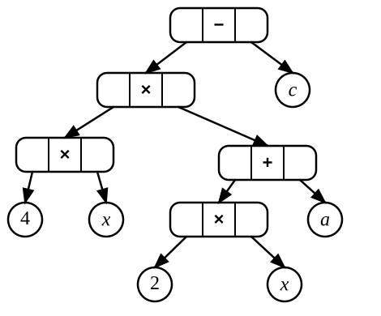

9.2 Tree representations
A binary tree is a special case of a more general tree in which each node has at most two children. Many applications, however, require trees with an arbitrary number of children or with different kinds of nodes serving different roles. In this section we consider these more general tree structures, how they can be represented, and how they are traversed.
9.2.1 Modelling different kinds of tree nodes
For simple binary trees, all nodes often have the same representation. However, many applications distinguish between internal nodes and leaves, because they store different kinds of information or serve different purposes. Using separate node types usually leads to a clearer design.
Some tree structures store data only in the leaves, while others store one kind of information in the leaves and another in the internal nodes. Examples include the Huffman coding tree (see Section 9.14), the binary trie, the PR Quadtree, and the expression tree illustrated by Figure 9.6 below.

Figure 9.6: An example of an expression tree for 4x(2x + a) - c.
An expression tree represents an algebraic expression built from binary operators such as addition, subtraction, multiplication, and division. Its internal nodes store operators, while its leaves store operands such as numbers and variables. Since operators and operands are conceptually different kinds of information, it is natural to represent them using different node types. These node types may also have different fields, reflecting the information they need to store.
This idea is not specific to binary trees. In general tree structures, nodes may have different numbers of children and different structural roles. Distinguishing between node types is therefore a natural way to model many applications.
Object-oriented languages commonly express this distinction through a class hierarchy, where a base node class is extended by specialised subclasses for leaves and internal nodes. Functional languages often use algebraic data types, defining a tree as one of several possible node variants. In this book, however, we usually assume that all nodes belong to the same class unless the distinction is important.
9.2.2 General trees
A general tree is a tree in which a node may have any number of children. Such trees are also called multiway trees or rose trees. This contrasts with binary trees, where each node has at most two children. In a pointer-based representation, a general-tree node will therefore usually store its children in a list or some similar container, rather than in fixed left and right child fields.
We can represent such general trees as follows:
datatype Tree of T:
value: T // Value stored in the node
children: List of Tree of T = [] // List of subtrees
size: Int9.2.3 Traversing a general tree
We have seen the three traditional tree traversals for binary trees: preorder, postorder, and inorder. For general trees, preorder and postorder extend naturally from the binary-tree case. In a preorder traversal, we first process the root, and then traverse each subtree from left to right. In a postorder traversal, we first traverse all subtrees from left to right, and then process the root.
Inorder traversal, however, does not have a similarly natural generalisation. For a binary tree, inorder works because each internal node has exactly two subtrees, so the node can be processed between the left and right subtrees. In a general tree, an internal node may have any number of children, so there is no obvious place where the node itself should be processed. One can invent an arbitrary convention, such as traversing the leftmost subtree first, then processing the root, and then traversing the remaining subtrees, but such a rule is not especially useful as a general pattern.
Visualisation of preorder traversal.
Visualisation of postorder traversal.
If each node stores its children in a list, then implementations of
preorder and postorder traversal are straightforward. The code is simple
because we defer the management of the children to the underlying
List implementation.
preorder(node):
process(node.value)
for each child in node.children:
preorder(child)
postorder(node):
for each child in node.children:
postorder(child)
process(node.value)Note that unlike a binary tree, a general tree does not contain null child values. A leaf is represented as a node with an empty list of children, not as a node with empty child pointers. If an application needs to represent an empty tree, the root itself may be null. However, once a node exists, each of its children is an actual node rather than a null reference.